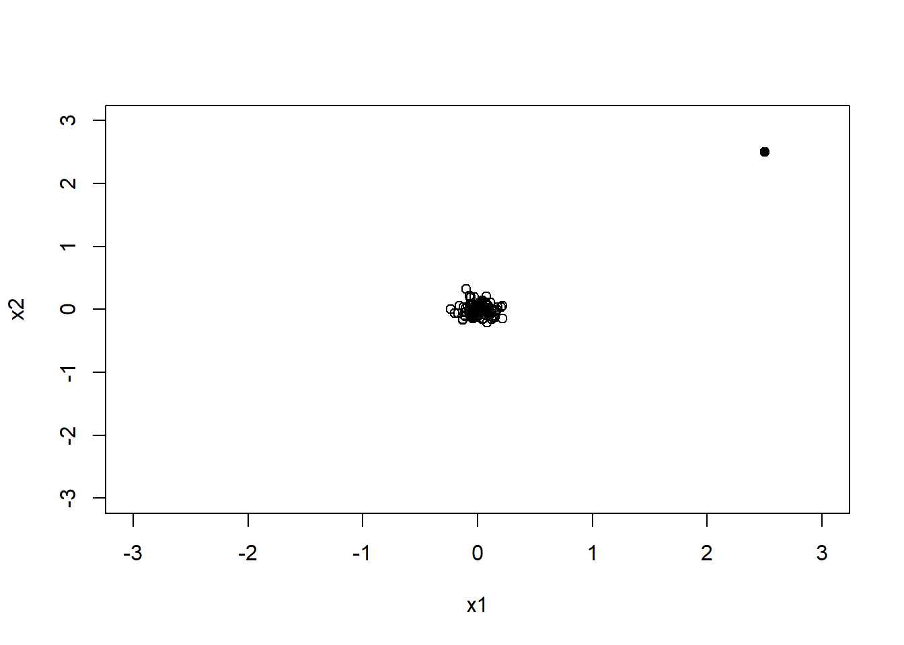
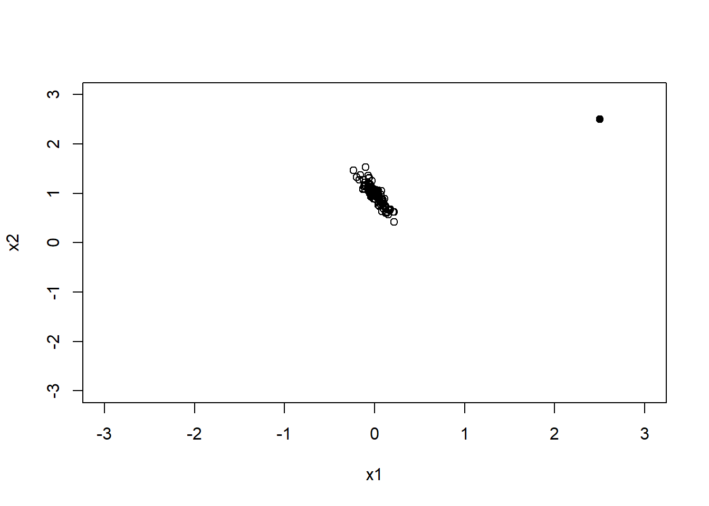

set.seed(123)
x1 <- rnorm(100, sd=0.1)
x2 <- rnorm(100, sd=0.1)
plot(x1, x2, xlim = c(-3, 3), ylim = c(-3, 3), xlab = "x1", ylab = "x2")
points(2.5, 2.5, pch = 19)
다중회귀분석에서는 설명변수를 많이 포함할수록 모형이 복잡해진다. 설명변수가 많아지면 훈련자료에서는 적합도가 좋아질 수 있지만, 불필요한 변수가 포함되면 회귀계수의 해석이 어려워지고 예측 성능이 오히려 나빠질 수 있다. 따라서 좋은 회귀모형은 단순히 많은 변수를 포함한 모형이 아니라, 분석 목적에 필요한 변수를 적절하게 포함한 모형이다.
이 장에서 특히 중요하게 생각해야 할 질문은 다음과 같다.
이 장에서는 설명변수들의 부분집합 중 반응변수와의 관계를 가장 잘 설명하는 부분집합을 선택하는 변수선택(variable selection)에 대해 설명함
불필요한 설명변수가 제거되면 간단하면서도 설명력이 높은 모형을 선택할 수 있음
설명변수들을 선별하는 단계에서 설명변수들 간의 관계에 대해 점검해 볼 필요가 있으므로 먼저 다중공선성 문제를 다룸
변수선택은 단순히 p-value가 유의한 변수만 남기는 절차가 아니다. 분석 목적이 설명이라면 연구 질문에 중요한 변수를 포함하고, 교란변수 또는 보정변수를 적절히 고려하는 것이 중요하다. 반면 분석 목적이 예측이라면 개별 회귀계수의 유의성보다 새로운 자료에서의 예측오차가 더 중요할 수 있다. 따라서 변수선택을 수행할 때는 먼저 분석 목적이 설명 중심인지, 예측 중심인지, 또는 간결한 모형 제시가 목적인지를 명확히 해야 한다.
설명변수 간에 연관성이 많으면 반응변수의 변화가 주요 설명변수보다 이 설명변수와 관련이 많은 다른 설명변수에 의존하게 되어 회귀모형 추정에 있어 문제가 발생함
그러므로 설명변수들의 다중공선성(multicollinearity) 등 설명변수들 간의 관계를 명확히 이해하는 것은 다중회귀분석에 있어 꼭 필요한 과정임
\[ c_1X_1 + c_2X_2 = c_0 \]
공선성이 있는 경우 회귀모형에서 두 변수를 모두 포함한다면 추정에 문제가 발생하게 되어 공선성 문제를 야기함
이상점이 공선성을 유도하는 경우
set.seed(123)
x1 <- rnorm(100, sd=0.1)
x2 <- rnorm(100, sd=0.1)
plot(x1, x2, xlim = c(-3, 3), ylim = c(-3, 3), xlab = "x1", ylab = "x2")
points(2.5, 2.5, pch = 19)
이상점이 공선성을 유도하는 경우로 이상점 때문에 두 변수간의 관련성이 높아짐
이상점이 공선성을 숨기는 경우
set.seed(123)
x1 <- rnorm(100, sd=0.1)
x2 <- 1-2*x1+rnorm(100, sd=0.1)
plot(x1, x2, xlim = c(-3, 3), ylim = c(-3, 3), xlab = "x1", ylab = "x2")
points(2.5, 2.5, pch = 19)
이상점을 제거하면 두 변수 간의 관련성이 높아짐
설명변수가 서로 독립이고 모형 설계시 고려되지 않은 다른 설명변수와 독립이라면 상관없지만 현실에서 설명변수가 완벽하게 독립인 경우는 거의 없음
설명변수 중 한 개가 다른 설명변수들의 선형조합으로 표현된다면 \(\mathbf{X'X}\)가 특이한(singular) 상황이 되며 다중공선성을 가지게 됨
이러한 경우 \((\mathbf{X'X})^{-1}\)를 구할 수 없어 회귀계수벡터 \(\beta\)에 대한 최소제곱추정량을 구하는 데 문제가 발생함
예) 아래와 같이 설명변수가 2개인 다중회귀모형
\[ Y=\beta_0 + \beta_1X_1 + \beta_2X_2 +\epsilon \]
\[ Var(\hat{\beta}_j)=\sigma^2(\frac{1}{1-r_{12}^2})(\frac{1}{S_{X_jX_j}}) \]
\(Var(\hat{\beta}_1)\)과 \(Var(\hat{\beta}_2)\)은 \(r_{12}^2=0\)일 때 최소값을 가지며 \(r_{12}^2\approx 1\)이면 \(\hat{\beta}_1\)과 \(\hat{\beta}_2\)의 분산은 크게 팽창되어(inflated) 회귀계수 추정값은 매우 불안정한 값이 됨
다중 공선성이 존재하는 경우 반응변수의 민감도는 설명변수의 위치에 따라 크게 좌우될 수 있으며 관측된 데이터에서 멀어지는 경우 예측값을 불안정하게 만드는 원인이 될 수 있음
다중공선성이 심하다고 해서 반드시 예측값 자체가 크게 나빠지는 것은 아니다. 서로 강하게 관련된 설명변수들이 함께 반응변수를 설명하면 적합값은 비교적 안정적일 수 있다. 그러나 개별 회귀계수를 분리해서 해석하기는 어려워진다. 즉, 다중공선성의 핵심 문제는 “모형 전체가 의미 없는가”라기보다 “각 설명변수의 독립적인 효과를 안정적으로 추정하고 해석할 수 있는가”에 있다.
설명변수들 간의 상관행렬에서 절대값이 큰 상관계수를 갖는 경우
\(j\)번째 설명변수를 반응변수 위치에 놓고 나머지 설명변수들로 회귀모형을 적합했을 때 결정계수 \(R_j^2\)이 1에 가까운 경우
\(\mathbf{X'X}\)의 고유값을 구한 후 크기 순서대로 늘어놓아 가장 큰 고유값을 \(\lambda_1\)이라 놓으면 \(\lambda_1>\lambda_2>\cdots>\lambda_{p+1}\)을 만족하며 가장 작은 고유값 \(\lambda_{p+1}\)에 대해 조건수(condition number)는 다음과 같음
\[ \kappa = \sqrt{\frac{\lambda_1}{\lambda_{p+1}}} \]
\[ Y=\beta_0 + \beta_1X_1 +\cdots +\beta_pX_p + \epsilon \]
\[ Var(\hat{\beta}_j)=\sigma^2(\frac{1}{1-R_{j}^2})(\frac{1}{S_{X_jX_j}}), \,\,\, j=1,\ldots, p \]
여기서 \(R_j^2\)은 \(j\)번째 설명변수를 반응변수 위치에 놓고 나머지 설명변수들로 회귀모형을 적합했을 때의 결정계수
만약 \(j\)번째 설명변수가 나머지 변수들의 어떤 부분집합에 거의 선형종속이면 \(R_j^2\)은 1에 가깝게 되고 \(\frac{1}{1-R_j^2}\)은 커지게 됨
\[ VIF_j = \frac{1}{1-R_j^2} \]
일반적으로 다중공선성의 존재를 조사하는 방법으로 분산팽창계수가 널리 쓰임
한 개 또는 그 이상의 \(VIF\) 값이 크면 다중공선성 문제가 있음을 나타냄
\(R_j^2\ge 0.6\)이상인 경우 즉, 분산팽창계수 \(VIF_j\ge 2.5\) 이상이면 다중공선성을 의심해 볼 수 있음
일반적으로 \(VIF_j \ge 10\)이면 다중공선성 문제가 있다고 함
VIF 기준은 분야와 분석 목적에 따라 다르게 적용될 수 있다. 예측이 주목적인 경우에는 VIF가 다소 크더라도 예측 성능이 충분히 좋다면 모형을 사용할 수 있다. 반면 특정 설명변수의 효과를 해석하는 것이 목적이라면 VIF가 크지 않은지 더 엄격하게 확인해야 한다. 특히 의학·보건학 연구에서 보정효과를 해석할 때는 회귀계수의 방향, 표준오차, 신뢰구간이 다중공선성에 의해 불안정해지지 않았는지 확인해야 한다.
다중공선성은 추정식과 예측값을 불안정하게 함
설명변수들 간의 상관관계로 인해 회귀계수에 대한 검정이 유의하지 않을 수 있으며 이러한 경우 추정식이 유의하지 않게 되며 따라서 예측값에 대해 신뢰할 수 없게 됨
또한 설명변수의 위치에 따라 예측값이 크게 좌우될 수 있으며 관측된 데이터에서 멀어지는 경우 예측값을 불안정하게 만드는 원인이 될 수 있음
상관성이 큰 설명변수를 제거한 후 분석
모든 설명변수를 포함시키고자 한다면 능형회귀(ridge regression) 등의 대안 모형을 모색
설명변수 간 다중공선성이 존재하는 경우 설명변수를 제거하여 모형을 개선하고 다중공선성을 줄일 수 있음
설명변수를 2개를 모두 포함한 완전모형
\[ Y=\beta_0+\beta_1X_1+\beta_2X_2+\epsilon \]
\[ Y=\beta_0+\beta_1X_1+\epsilon \]
\[ E(\hat{\beta}_1)=\beta_1, \,\,\, Var(\hat{\beta}_1)=\frac{\sigma^2}{1-r_{12}^2} \]
\[ E(\hat{\beta}_1)=\beta_1+r_{12}\beta_2, \,\,\, Var(\hat{\beta}_1)=\sigma^2 \]
\[ Var(\hat{\beta}_1)_{full}=\frac{\sigma^2}{1-r_{12}^2}\ge\sigma^2=Var(\hat{\beta}_1)_{reduce} \]
축소모형에서의 회귀계수 추정량의 분산이 완전모형보다 작음을 알 수 있으므로 공선성이 존재할 경우에는 축소모형을 선택하는 것이 좋음
\(p\)개의 설명변수가 있는 다중회귀모형에서 모형비교
\[ \mathbf{Y=X\beta+\epsilon} \]
\[ \mathbf{Y=X_1\beta_1+X_2\beta_2+\epsilon} \]
\[ \mathbf{Y=X_1\beta_1+\epsilon} \]
축소된 회귀모형은 완전모형에서 \(\beta_2=0\)일 경우 동일한 모형이 됨
축소된 모형에서의 \(\beta_1\)에 대한 추정량
\[ \hat{\beta}_1=\mathbf{(X_1'X_1)^{-1}X_1'Y} \]
두 모형 비교를 위한 통계적 가설
\(H_0\)하에서의 잔차제곱합 \(RSS_{H_0}\)는 자유도 \(df_{H_0}\)를 가지며, \(H_1\)하에서의 잔차제곱합 \(RSS_{H_1}\)는 자유도 \(df_{H_1}\)를 가짐
대립가설하에서 모수의 개수가 더 많으므로 \(df_{H_0}>df_{H_1}\)이 됨
검정통계량
\[ F=\frac{(RSS_{H_0}-RSS_{H_1})/(df_{H_0}-df_{H_1})}{RSS_{H_1}/df_{H_1}} \sim F_{df_{H_0}-df_{H_1},df_{H_1}} \]
완전모형과 축소모형을 F-검정으로 비교할 때는 두 모형이 중첩모형(nested model) 이어야 한다. 즉, 축소모형은 완전모형에서 일부 설명변수를 제거한 형태여야 한다. 예를 들어 y ~ x1 + x2 + x3와 y ~ x1 + x2는 중첩모형이므로 F-검정으로 비교할 수 있다. 하지만 y ~ x1 + x2와 y ~ x3 + x4처럼 서로 포함관계가 없는 모형은 일반적인 중첩모형 F-검정으로 직접 비교하기 어렵다.
F-검정에서 귀무가설이 기각되면 제거하려던 변수들이 반응변수 설명에 유의하게 기여한다고 볼 수 있다. 반대로 귀무가설이 기각되지 않으면 축소모형이 충분히 간단하면서도 자료를 설명하는 데 큰 손실이 없다고 해석할 수 있다.
\[ F\ge F_{df_{H_0}-df_{H_1},df_{H_1}} \,\,\, then \,\,\, reject \,\,\, H_0 \]
회귀분석에서는 여러 개의 설명변수 중 어떤 변수를 회귀모형에 포함할 것인지를 결정해야 하는 경우가 많다. 가능한 모든 설명변수를 모형에 포함하면 자료에 대한 설명력은 높아질 수 있지만, 불필요한 변수가 포함되면서 모형이 지나치게 복잡해지고 해석이 어려워질 수 있다.
반대로 설명변수를 지나치게 제거하면 반응변수와 중요한 관련성을 갖는 변수가 제외되어 모형의 편향(bias)이 증가할 수 있다.
따라서 회귀분석에서는 연구목적과 자료의 특성을 고려하여 필요한 설명변수를 선택하고 불필요한 설명변수를 제외함으로써 적절한 회귀모형을 구성하는 과정이 필요하다. 이를 변수선택(variable selection) 또는 모형선택(model selection)이라 한다.
변수선택의 주요 목적은 다음과 같다.
그러나 다중공선성이 크다는 이유만으로 설명변수를 기계적으로 제거하는 것은 적절하지 않을 수 있다.
예를 들어 연구적으로 반드시 보정해야 하는 변수나 중요한 교란변수(confounder)는 통계적으로 유의하지 않더라도 모형에 포함해야 할 수 있다. 따라서 변수선택은 단순히 통계적 기준만으로 결정하기보다 연구목적, 변수의 의미, 통계적 적합도, 예측성능 등을 종합적으로 고려하는 과정으로 이해해야 한다.
모수절약의 원칙(principle of parsimony)은 비슷한 수준의 설명력이나 예측력을 갖는 여러 모형이 있다면 가능한 한 단순한 모형을 선호한다는 원칙이다.
예를 들어 3개의 설명변수로 구성된 회귀모형과 10개의 설명변수로 구성된 회귀모형의 예측성능이 거의 동일하다면, 일반적으로 3개의 설명변수로 구성된 모형을 선호할 수 있다.
단순한 모형은 다음과 같은 장점이 있다.
그러나 단순한 모형이 항상 좋은 모형이라는 의미는 아니다.
중요한 설명변수까지 제거하면 모형의 편향이 증가하고 중요한 관계를 놓칠 수 있다. 반대로 설명변수를 지나치게 많이 포함하면 모형의 분산(variance)이 증가하고 표본자료에 과도하게 적합될 수 있다.
즉, 변수선택은 다음과 같은 두 문제 사이의 균형을 찾는 과정이다.
너무 단순한 모형 → 편향 증가
너무 복잡한 모형 → 분산 및 과적합 증가
따라서 변수선택은 모형의 적합도와 복잡도 사이의 균형, 또는 편향과 분산 사이의 균형(bias-variance trade-off)을 찾는 과정으로 이해할 수 있다.
전통적인 회귀분석의 변수선택 방법은 크게 다음과 같이 구분할 수 있다.
앞의 세 방법은 현재 모형에서 설명변수를 하나씩 추가하거나 제거하면서 적절한 모형을 탐색한다는 점에서 단계적 탐색방법(sequential variable selection)에 해당한다.
반면 최적 부분집합 선택은 가능한 설명변수들의 여러 조합을 직접 비교한다.
단계적 변수선택법은 설명변수를 하나씩 추가하거나 제거하면서 적절한 설명변수의 조합을 찾아가는 방법이다.
변수를 추가하거나 제거하는 기준으로는 다음과 같은 통계량을 사용할 수 있다.
전통적으로는 유의수준을 이용한 \(F\)-검정 또는 p-value를 많이 사용하였으나, 최근에는 AIC나 BIC와 같은 정보기준을 이용하여 단계적 탐색을 수행하기도 한다.
전진 선택법(forward selection)은 설명변수가 하나도 포함되지 않은 모형에서 시작하여 설명변수를 하나씩 추가하는 방법이다.
일반적으로 초기모형은 절편(intercept)만을 포함한다.
\[ Y_i=\beta_0+\epsilon_i \]
이 모형에서 출발하여 반응변수를 가장 잘 설명하는 설명변수를 하나씩 추가한다.
예를 들어 설명변수가
\[ X_1,\;X_2,\;X_3,\;X_4 \]
라고 하자.
처음에는
\[ Y=\beta_0+\epsilon \]
에서 시작하고, 각각
\[ Y=\beta_0+\beta_1X_1+\epsilon \]
\[ Y=\beta_0+\beta_2X_2+\epsilon \]
\[ Y=\beta_0+\beta_3X_3+\epsilon \]
\[ Y=\beta_0+\beta_4X_4+\epsilon \]
을 비교한다.
이 가운데 \(X_2\)를 포함하는 모형이 가장 좋은 경우 \(X_2\)를 먼저 선택한다.
다음 단계에서는
\[ (X_2,X_1),\quad (X_2,X_3),\quad (X_2,X_4) \]
를 비교하여 추가할 변수를 선택한다.
전진 선택법은 후보 설명변수가 많더라도 상대적으로 계산량이 적다는 장점이 있다. 그러나 한 번 모형에 포함된 변수는 이후 단계에서 다시 제거하지 않는 것이 일반적인 전진 선택법의 특징이다. 따라서 초기에 선택된 변수가 이후 변수선택에 큰 영향을 줄 수 있으며, 초기에 부적절한 변수가 포함된 경우 더 좋은 변수조합을 찾지 못할 가능성이 있다.
후진 제거법(backward elimination)은 모든 후보 설명변수를 포함한 완전모형(full model)에서 시작하여 필요하지 않은 설명변수를 하나씩 제거하는 방법이다.
후보 설명변수가 \(p\)개라면 최초의 완전모형은
\[ Y_i = \beta_0 +\beta_1X_{i1} +\beta_2X_{i2} +\cdots +\beta_pX_{ip} +\epsilon_i \]
가 된다.
p-value를 이용하는 경우에는 일반적으로 p-value가 가장 큰 변수부터 제거하는 방식을 생각할 수 있다.
후진 제거법의 장점은 처음부터 모든 설명변수를 동시에 고려한다는 것이다.
따라서 특정 설명변수가 다른 변수들이 모형에 포함되어 있는 상황에서 어떤 역할을 하는지 평가할 수 있다.
그러나 모든 후보 설명변수가 포함된 완전모형을 적합할 수 있어야 한다는 제약이 있다.
특히 다음과 같은 경우에는 적용하기 어렵다.
단계별 선택법(stepwise selection)은 전진 선택법과 후진 제거법의 특성을 결합한 방법이다. 전진 선택법에서는 한 번 선택된 설명변수가 이후 제거되지 않는다. 그러나 새로운 설명변수가 모형에 추가되면 기존에 선택된 설명변수의 중요성이 달라질 수 있다. 단계별 선택법에서는 이러한 문제를 해결하기 위하여 새로운 설명변수를 추가한 후 기존에 포함되어 있던 변수들의 필요성을 다시 평가한다.
따라서 한 번 선택되었던 변수라도 이후에 모형에서 제거될 수 있다.
처음에 \(X_1\)이 선택되었다고 하자.
\[ Y=\beta_0+\beta_1X_1+\epsilon \]
다음 단계에서 \(X_2\)가 추가되면
\[ Y=\beta_0+\beta_1X_1+\beta_2X_2+\epsilon \]
이 된다.
이때 \(X_2\)가 추가되기 전에는 \(X_1\)이 유의하였지만, \(X_2\)와 \(X_1\)이 높은 상관관계를 갖는다면 \(X_2\)가 추가된 후 \(X_1\)의 추가적인 설명력이 매우 작아질 수 있다. 단계별 선택법에서는 이 시점에서 \(X_1\)의 필요성을 다시 평가하여 필요하면 제거한다. 이러한 점이 전진 선택법과 단계별 선택법의 중요한 차이이다.
부분 \(F\)-검정이나 p-value를 이용하여 단계별 변수선택을 수행하는 경우에는 설명변수의 진입기준(entry criterion)과 제거기준(removal criterion)을 설정할 수 있다.
예를 들어
\[ \alpha_{\text{entry}}=0.05 \]
를 변수의 진입기준으로 사용하면 p-value가 0.05보다 작은 설명변수를 모형에 포함할 수 있다.
또한
\[ \alpha_{\text{remove}}=0.10 \]
을 제거기준으로 사용하면 모형에 포함된 변수의 p-value가 0.10보다 커졌을 때 제거할 수 있다.
일반적으로 단계별 선택에서 변수들이 지나치게 반복해서 들어왔다 나가는 현상을 줄이기 위해
\[ \alpha_{\text{entry}} < \alpha_{\text{remove}} \]
와 같이 설정하기도 한다.
그러나 구체적인 기준은 분석목적과 소프트웨어에 따라 달라질 수 있다.
전진선택, 후진제거 및 단계별 선택은 사용하기 쉽고 직관적이기 때문에 널리 사용되어 왔다. 그러나 다음과 같은 중요한 한계가 있다.
선택된 변수의 조합이 표본에 민감할 수 있다. 특히 설명변수들 사이의 상관관계가 높은 경우에는 자료의 일부가 조금만 달라져도 서로 다른 변수가 선택될 수 있다. 예를 들어 \(X_1\)과 \(X_2\)가 매우 높은 상관관계를 가지고 반응변수와 비슷한 정도의 관련성을 가진다면 어떤 표본에서는 \(X_1\)이 선택되고 다른 표본에서는 \(X_2\)가 선택될 수 있다. 따라서 선택된 변수 자체를 절대적인 결과로 해석할 때 주의해야 한다.
단계적 변수선택에서는 많은 후보변수에 대하여 반복적으로 통계적 검정을 수행한다. 따라서 최종모형에서 얻어진 p-value를 마치 처음부터 해당 모형이 정해져 있었던 것처럼 해석하는 것은 적절하지 않을 수 있다. 일반적인 회귀분석의 p-value와 신뢰구간은 분석 전에 모형이 정해져 있다고 가정하여 계산된다. 그러나 변수선택을 수행한 경우에는
“어떤 변수를 선택할 것인가?”
라는 과정 자체가 자료에 의해 결정된다. 따라서 선택 후의 회귀계수, p-value 및 신뢰구간에는 모형선택 과정에서 발생한 추가적인 불확실성이 충분히 반영되지 않을 수 있다.
단계적 변수선택은 모든 가능한 변수조합을 비교하지 않는다. 현재 단계에서 가장 좋은 선택을 순차적으로 반복하는 탐욕적 탐색(greedy search)에 가깝기 때문에 최종적으로 얻어진 모형이 가능한 모든 모형 중 가장 좋은 모형이라는 보장은 없다. 따라서 단계별 변수선택 결과는 최종적인 정답이라기보다 적절한 후보모형을 탐색하는 방법으로 사용하는 것이 바람직하다.
단계적 변수선택은 주로 자료에서 계산되는 통계량에 의해 변수의 포함 여부를 결정한다. 그러나 임상적·과학적·이론적으로 중요한 변수는 통계적 유의성이 낮더라도 반드시 포함해야 하는 경우가 있다. 특히 다음 변수들은 통계적 기준만으로 제거하지 않도록 주의해야 한다.
R의 기본 함수인 step()을 이용하면 단계적 변수선택을 수행할 수 있다.
예를 들어 완전모형이 다음과 같다고 하자.
full_model <- lm(y ~ x1 + x2 + x3 + x4 + x5, data = dat)backward_model <- step(
full_model,
direction = "backward"
)stepwise_model <- step(
full_model,
direction = "both"
)또한 MASS 패키지의 stepAIC()를 이용할 수도 있다.
library(MASS)
stepwise_model <- stepAIC(
full_model,
direction = "both"
)step()과 stepAIC()는 기본적으로 AIC 계열의 기준을 이용하여 모형을 비교한다.
따라서 단순히 개별 회귀계수의 p-value가 가장 큰 변수를 순차적으로 제거하는 절차와는 구분할 필요가 있다.
최적 부분집합 선택(best subset selection)은 후보 설명변수로 만들 수 있는 여러 부분집합 모형을 비교하여 가장 적절한 변수조합을 찾는 방법이다. 후보 설명변수가 \(p\)개인 경우 각 설명변수는
두 가지 선택이 가능하다.
따라서 가능한 변수의 부분집합은 이론적으로
\[ 2^p \]
개이다. 예를 들어 후보 설명변수가 5개라면
\[ 2^5=32 \]
개의 변수조합이 존재한다. 따라서 설명변수의 수가 증가하면 가능한 모형의 수가 매우 빠르게 증가한다.
즉, 최적 부분집합 선택은 다음의 두 단계를 구분하여 생각하는 것이 중요하다.
1단계: 각 크기의 모형 중 가장 좋은 부분집합을 찾음
2단계: 서로 다른 크기의 모형들을 평가기준으로 비교하여 최종모형을 결정
leaps 패키지의 regsubsets() 함수를 이용할 수 있다.
library(leaps)
fit <- regsubsets(
y ~ .,
data = dat,
nvmax = 10
)
summary(fit)summary() 결과를 이용하여 수정결정계수, Mallows의 \(C_p\), BIC 등을 비교할 수 있다.
변수선택에서는 단순히 어떻게 후보모형을 탐색할 것인가뿐만 아니라 어떤 기준으로 후보모형을 평가할 것인가가 중요하다. 대표적인 모형 선택기준에는 다음이 있다.
각 기준은 서로 다른 특성을 가지므로 항상 동일한 모형을 선택하는 것은 아니다.
결정계수(coefficient of determination) \(R^2\)는 전체 반응변수 변동 중 회귀모형이 설명하는 비율을 나타낸다.
\[ R^2 = 1- \frac{SSE}{SST} \]
여기서
이다.
결정계수는
\[ 0\le R^2\le1 \]
의 범위를 가지며 일반적으로 1에 가까울수록 모형의 자료 설명력이 높다고 해석한다. 그러나 \(R^2\)에는 변수선택 기준으로 중요한 한계가 있다.
동일한 자료에서 새로운 설명변수를 추가하면 \(R^2\)는 감소하지 않는다.
새로운 설명변수가 실제로 중요하지 않더라도
\[ R^2_{\text{new}} \ge R^2_{\text{old}} \]
가 성립한다. 따라서 단순히 \(R^2\)가 가장 큰 모형을 선택한다면 가장 많은 설명변수가 포함된 모형을 선택하게 될 가능성이 높다. 이 때문에 \(R^2\) 자체는 변수 수가 다른 모형들을 비교하는 기준으로 제한점이 있다.
결정계수의 이러한 문제를 보완하기 위해 수정결정계수(adjusted \(R^2\))를 사용할 수 있다. 표본의 크기를 \(n\), 모형에 포함된 설명변수의 수를 \(d\)라고 하면
\[ R_{\text{adj}}^2 = 1-(1-R^2) \frac{n-1}{n-d-1} \]
이다. 여기서 \(d\)는 절편을 제외한 설명변수의 수이다. 또한 다음과 같이 나타낼 수도 있다.
\[ R_{\text{adj}}^2 = 1- \frac{SSE/(n-d-1)} {SST/(n-1)} \]
수정결정계수에는 설명변수의 수에 대한 보정이 포함되어 있다.
새로운 설명변수를 추가하면 일반적인 \(R^2\)는 반드시 증가하거나 동일하지만, 수정결정계수는 새 변수가 모형의 설명력을 충분히 향상시키지 못하는 경우 감소할 수 있다. 따라서 변수 수가 서로 다른 모형들을 비교할 때 일반적인 \(R^2\)보다 수정결정계수가 더 적절한 기준이 될 수 있다.
수정결정계수를 이용하여 여러 후보모형을 비교하는 경우에는 일반적으로 수정결정계수가 큰 모형을 선호한다. 그러나 수정결정계수만으로 최종모형을 결정하는 것보다는 다른 모형선택 기준과 함께 검토하는 것이 바람직하다.
Mallows의 \(C_p\)는 부분집합 회귀모형의 적합도와 복잡도를 함께 평가하기 위해 사용되는 대표적인 모형선택 통계량이다. 완전모형에서 얻은 오차분산의 추정치를 기준으로 각 부분집합 모형의 오차를 평가한다.
후보모형에 절편을 제외하고 \(d\)개의 설명변수가 포함되어 있다고 하자. 후보모형에 포함된 전체 회귀계수의 수는 절편을 포함하여 \(k=d+1\)이 된다. 후보모형의 오차제곱합을 \(SSE_d\), 완전모형의 평균오차제곱을 \(MSE_{\text{full}}\)이라고 하면 Mallows의 \(C_p\)는
\[ C_p = \frac{SSE_d}{MSE_{\text{full}}} -n+2(d+1) \]
로 나타낼 수 있다.
좋은 후보모형에서는 중요한 변수가 빠져 있지 않아 모형의 편향이 크지 않아야 한다. 이러한 경우 일반적으로 \(E(C_p)\approx k\) 즉, \(C_p\approx k\)가 되는 것이 바람직하다. 여기서 \(k\)는 절편을 포함한 후보모형의 회귀계수 수이다.
따라서 Mallows의 \(C_p\)를 이용한 모형선택에서는 다음 두 가지를 함께 고려한다.
예를 들어 설명변수 4개와 절편으로 구성된 모형이라면 \(k=5\)이다. 이때 \(C_p\approx5\)인 모형은 중요한 변수가 빠져 있지 않은 적절한 후보모형일 가능성이 있다.
반대로 \(C_p\gg k\)라면 현재 부분집합에서 중요한 설명변수가 제외되어 있을 가능성을 생각할 수 있다. 단, \(C_p\)가 정확히 \(k\)와 같아야 한다는 의미는 아니며 여러 후보모형 사이의 비교를 위한 지표로 사용한다.
변수선택에서는 수정결정계수나 Mallows의 \(C_p\) 외에도 정보기준(information criterion)이 널리 사용된다. 대표적인 정보기준은 다음과 같다.
정보기준은 기본적으로 다음의 두 요소를 동시에 고려한다.
자료에 대한 모형의 적합도
+ 모형 복잡도에 대한 벌점(penalty)
자료에 대한 적합도만 고려한다면 설명변수가 많고 복잡한 모형이 유리해질 가능성이 높다. 따라서 설명변수와 모수의 수가 많아질수록 벌점을 부여하여 지나치게 복잡한 모형의 선택을 방지한다.
AIC(Akaike information criterion)는 다음과 같이 정의된다.
\[ AIC = -2\log L+2k \]
여기서
이다. AIC는 다음 두 부분으로 구성된다. \(-2\log L\) 은 모형의 자료 적합도와 관련된 항이고, \(2k\)는 모형의 복잡도에 대한 벌점이다. 자료에 잘 적합할수록 첫 번째 항이 작아지는 방향으로 작용하지만, 많은 모수를 포함하면 두 번째 항이 증가한다. 따라서 AIC는 자료에 잘 적합하면서 지나치게 복잡하지 않은 모형을 선택하도록 한다.
여러 후보모형을 비교할 때 \(AIC\)가 가장 작은 모형을 선호한다. AIC 값 자체의 절대적인 크기보다는 동일한 자료에 적합한 후보모형들 사이의 상대적 차이가 중요하다. AIC는 새로운 자료에 대한 예측성능의 관점에서 좋은 모형을 선택하는 데 많이 사용된다.
BIC(Bayesian information criterion)는 다음과 같이 정의한다.
\[ BIC = -2\log L+k\log(n) \]
여기서
이다. AIC와 BIC는 모두 모형 적합도와 복잡도를 고려하지만 복잡도에 대한 벌점의 크기가 다르다. AIC의 벌점은 \(2k\)이고, BIC의 벌점은 \(k\log(n)\)이다. 표본 수가 충분히 커지면 일반적으로 \(\log(n)>2\)가 되므로 BIC가 AIC보다 복잡한 모형에 더 큰 벌점을 부여하게 된다.
따라서 많은 상황에서 BIC는 AIC보다 설명변수가 적은 간결한 모형을 선택하는 경향이 있다.
| 기준 | 식 | 복잡도 벌점 | 일반적인 특성 |
|---|---|---|---|
| AIC | \(-2\log L+2k\) | \(2k\) | 예측성능을 중요하게 고려 |
| BIC | \(-2\log L+k\log n\) | \(k\log n\) | 더 간결한 모형을 선택하는 경향 |
특히 표본 수가 증가할수록 BIC의 복잡도 벌점이 커지므로 AIC와 BIC가 서로 다른 모형을 선택할 수 있다.
예를 들어
을 선택하는 상황이 발생할 수 있다. 이는 어느 한 기준이 잘못되었다는 의미가 아니라 두 기준이 모형의 복잡성에 대해 서로 다른 관점을 적용하고 있기 때문이다.
변수선택에서 자주 사용하는 기준을 정리하면 다음과 같다.
| 기준 | 좋은 모형의 방향 | 복잡도 고려 | 특징 |
|---|---|---|---|
| \(R^2\) | 클수록 좋음 | 없음 | 변수 추가 시 감소하지 않음 |
| 수정 \(R^2\) | 클수록 좋음 | 설명변수 수 보정 | 설명력과 복잡도를 동시에 고려 |
| Mallows의 \(C_p\) | 작고 모수 수에 가까움 | 있음 | 완전모형의 MSE를 기준으로 평가 |
| AIC | 작을수록 좋음 | \(2k\) | 예측 관점에서 널리 사용 |
| BIC | 작을수록 좋음 | \(k\log n\) | 상대적으로 간결한 모형을 선호 |
이러한 기준들이 항상 동일한 모형을 선택하는 것은 아니다. 따라서 실제 분석에서는 하나의 수치만 기계적으로 적용하기보다 여러 기준을 종합적으로 검토하는 것이 바람직하다.
수정결정계수, Mallows의 \(C_p\), AIC 및 BIC는 주어진 자료에서 모형의 적합도와 복잡성을 평가한다. 그러나 분석목적이 새로운 관측값을 정확하게 예측하는 것이라면 실제 예측성능을 직접 평가하는 것이 중요하다. 이를 위해 검증자료(validation data) 또는 교차검증(cross-validation)을 이용할 수 있다.
전체 자료를 다음과 같이 나눌 수 있다.
각 후보모형을 학습자료에서 적합한 후 검증자료에서 예측오차를 계산하여 비교할 수 있다. 예측성능을 평가하는 대표적인 지표는 다음과 같다.
\[ MSE = \frac{1}{n} \sum_{i=1}^{n} (y_i-\hat y_i)^2 \]
\[ RMSE = \sqrt{ \frac{1}{n} \sum_{i=1}^{n} (y_i-\hat y_i)^2 } \]
\[ MAE = \frac{1}{n} \sum_{i=1}^{n} |y_i-\hat y_i| \]
일반적으로 이러한 예측오차가 작은 모형을 선호한다.
자료의 수가 충분하지 않아 별도의 검증자료를 확보하기 어려운 경우에는 \(K\)-겹 교차검증(\(K\)-fold cross-validation)을 사용할 수 있다. 전체 자료를 비슷한 크기의 \(K\)개 집단으로 나눈다.
예를 들어 5-fold cross-validation에서는 자료를 5개 집단으로 나눈다.
이를 식으로 나타내면
\[ CV_K = \frac{1}{K} \sum_{j=1}^{K} E_j \]
와 같이 생각할 수 있다. 여기서 \(E_j\)는 \(j\)번째 fold를 검증자료로 사용했을 때의 예측오차이다. 후보모형들 가운데 평균 교차검증 오차가 작은 모형을 선택할 수 있다.
따라서 예측이 중요한 분석에서는 AIC나 BIC뿐만 아니라 교차검증을 이용한 예측성능을 함께 평가하는 것이 바람직하다.
후보 설명변수가 많거나 설명변수 사이에 높은 상관관계가 존재하는 경우에는 전통적인 단계별 변수선택과 다른 접근을 사용할 수 있다. 대표적인 방법이 벌점회귀(penalized regression)이다. 벌점회귀에서는 일반적인 잔차제곱합에 회귀계수의 크기에 대한 벌점을 추가한다. 대표적인 방법으로 다음이 있다.
Ridge 회귀는 다음 목적함수를 최소화한다.
\[ \sum_{i=1}^{n} \left( y_i-\beta_0-\sum_{j=1}^{p}x_{ij}\beta_j \right)^2 + \lambda \sum_{j=1}^{p}\beta_j^2 \]
여기서 \(\lambda\ge0\)는 벌점의 크기를 결정하는 조절모수(tuning parameter)이다. \(\lambda\)가 증가할수록 회귀계수들이 0 방향으로 축소된다. Ridge 회귀는 다중공선성이 존재할 때 회귀계수의 분산을 줄이고 추정을 안정화하는 데 효과적이다. 그러나 일반적으로 회귀계수를 정확히 0으로 만들지는 않기 때문에 엄밀한 의미에서 직접적인 변수선택을 수행하는 방법은 아니다.
LASSO(least absolute shrinkage and selection operator)는 다음 목적함수를 최소화한다.
\[ \sum_{i=1}^{n} \left( y_i-\beta_0-\sum_{j=1}^{p}x_{ij}\beta_j \right)^2 + \lambda \sum_{j=1}^{p}|\beta_j| \]
Ridge 회귀가 제곱된 회귀계수에 벌점을 부과하는 것과 달리 LASSO는 회귀계수의 절댓값에 벌점을 부과한다. 이러한 \(L_1\) 벌점의 특성으로 인해 일부 회귀계수가 정확하게 \(\beta_j=0\)이 될 수 있다. 따라서 LASSO는
회귀계수의 축소(shrinkage) + 변수선택(variable selection)
을 동시에 수행할 수 있다.
Elastic net은 Ridge와 LASSO의 벌점을 결합한 방법이다. 개념적으로 다음과 같은 벌점을 사용한다.
\[ \lambda \left[ \alpha\sum_{j=1}^{p}|\beta_j| + (1-\alpha)\sum_{j=1}^{p}\beta_j^2 \right] \]
여기서 \(0\le\alpha\le1\)이다.
설명변수들 사이의 상관관계가 매우 높은 경우에는 LASSO가 상관된 변수 중 하나만 선택하는 경향을 보일 수 있다. Elastic net은 이러한 상황에서 관련 변수들을 함께 고려할 수 있다는 장점이 있다.